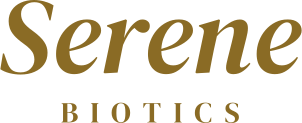
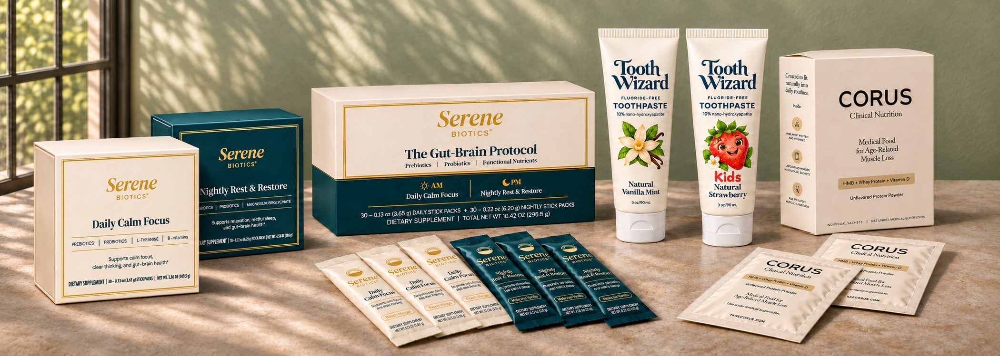
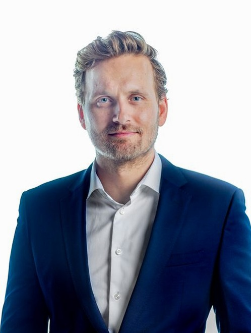

Serene Biotics


Scientific advisors, ingredient partners and qualified U.S. manufacturers.
Amazon, direct-to-consumer and retail.
Funding, inventory, production planning and financial reporting.
Founder & CEO
Previously P&G and Amazon.

Co-founder & President
Built and sold a national services firm.